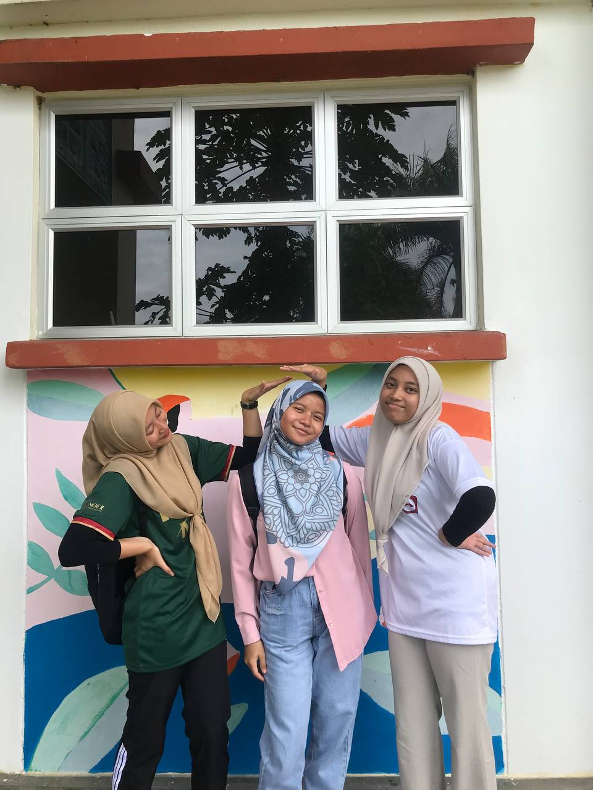
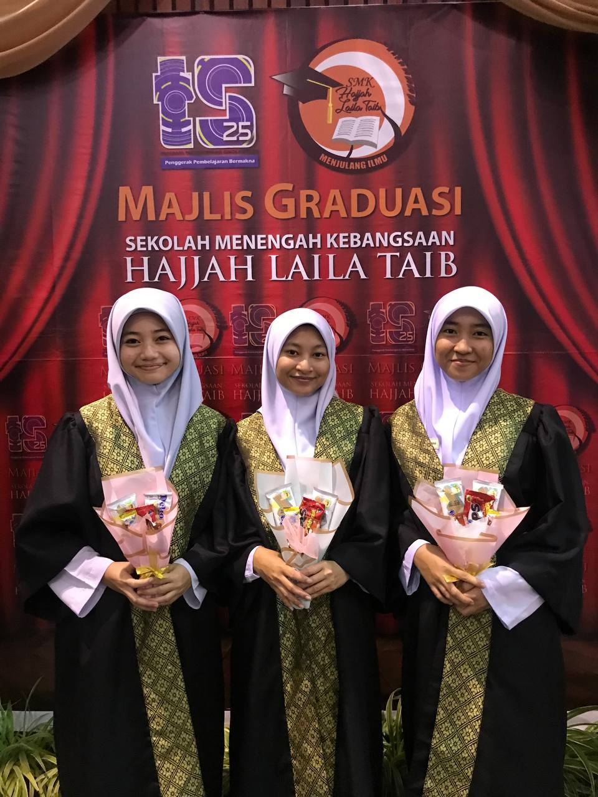
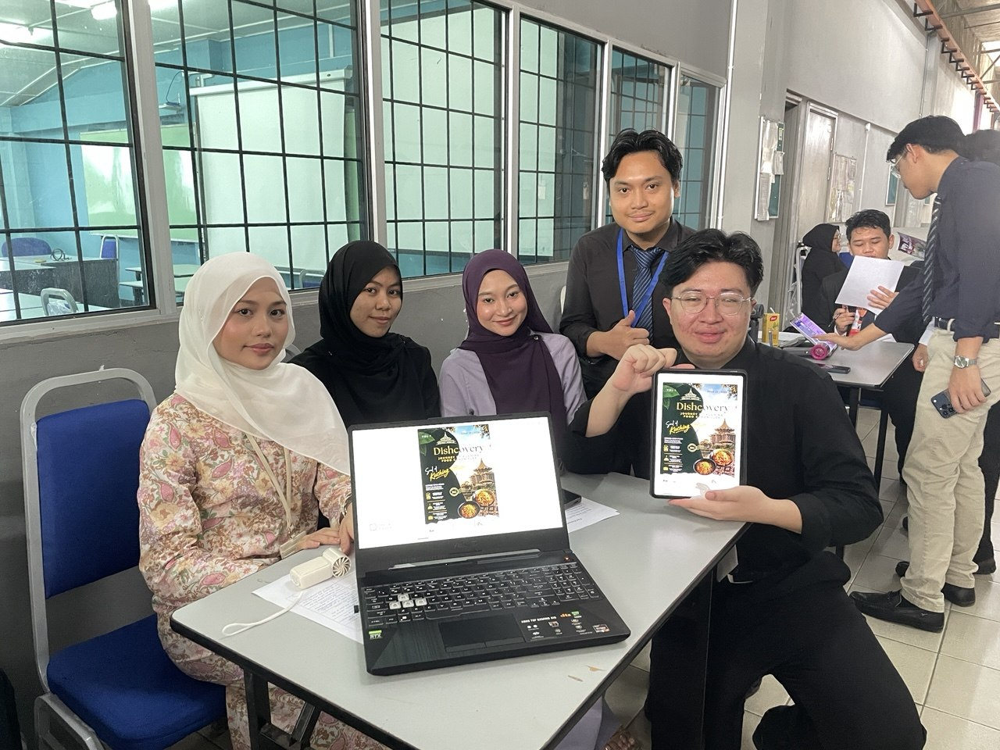
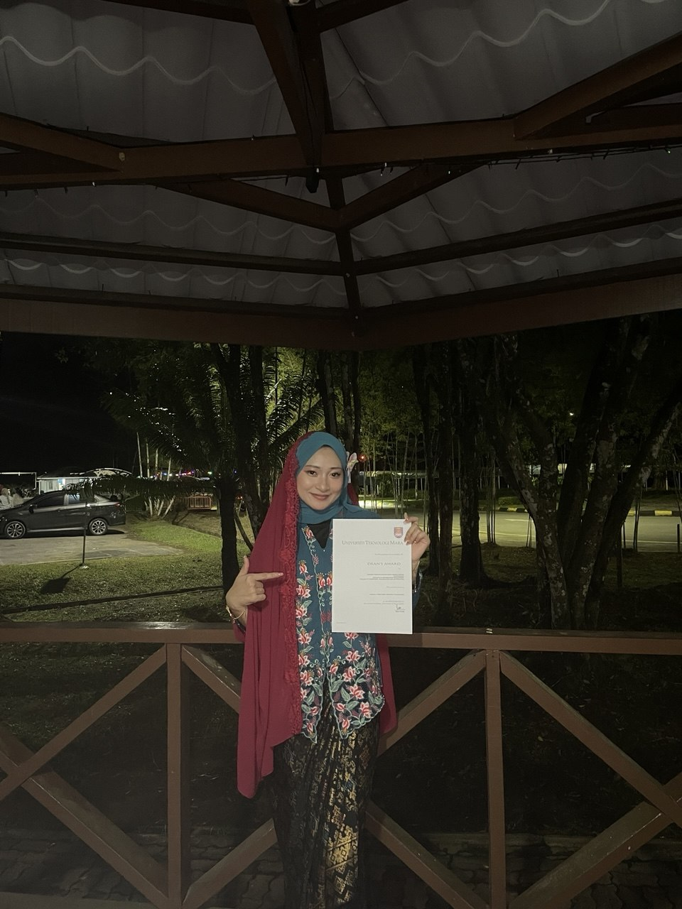

Education has always been an important part of my journey. Throughout the years, I have experienced different stages of learning, met wonderful people and collected memories that I will always treasure. From my early school days to my university life, every chapter has taught me something valuable and helped me grow.
Early Years ♡
SK Abang Aing ↗
Every educational journey begins somewhere. My early years were the beginning of my learning experience, where I started discovering new things and building the foundation for my future education.
School Days 🎓
SMK Hajjah Laila Taib ↗
My school years were filled with lessons, friendships and unforgettable memories. During this stage, I learned to become more independent, responsible and confident. It was also where I developed my interest in learning and discovering new knowledge.
University Journey 🎓
UiTM Sarawak ↗
A new chapter began when I continued my studies in the Diploma in Information Management programme at Universiti Teknologi MARA (UiTM) Sarawak .
University life has introduced me to new knowledge, assignments, group projects and meaningful friendships. It has also given me opportunities to develop my skills and discover more about myself.
Little Achievements, Big Memories ♡
UiTM Sarawak ↗
Throughout my studies, I have worked hard to achieve my academic goals. Being recognised for my academic performance has been one of the most meaningful parts of my university journey.
These achievements remind me that consistency, patience and determination are important. They motivate me to keep improving and give my best in everything I do.
New Experience ✨
PPD Lundu ↗
My internship journey has been a valuable opportunity to experience the real working environment, gain practical knowledge and apply what I have learned throughout my studies.
Throughout this journey, I had the chance to explore new responsibilities, learn from experienced individuals, develop my skills and create meaningful memories. Every experience has taught me something new and helped me grow both personally and professionally.
A NOTE TO MYSELF
My Story Continues...
"Education is not just about reaching the destination.
It is about every lesson, every challenge and every
little achievement along the way."
✧ With love, Maiza ✧